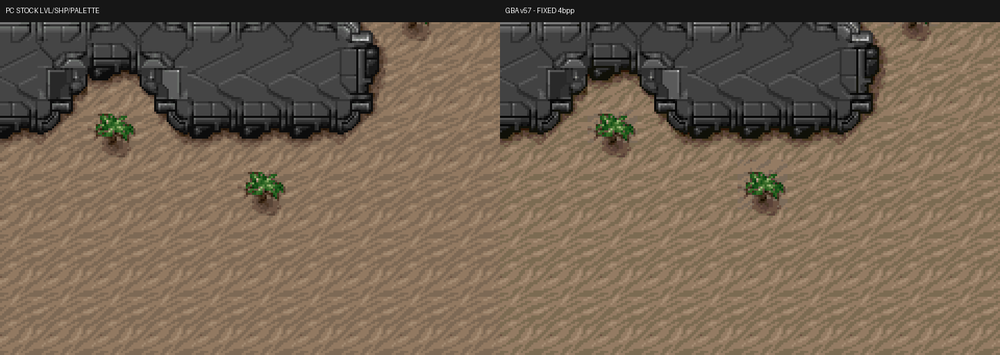

真正的硬體邊界
Tyrian 的 PC 素材以 256 色索引表示。GBA Mode 0 的 4bpp text background 則要求每塊 8×8 tile 選擇一個 16-entry palette bank，其中 index 0 用作透明，因此一塊 tile 實際只剩 15 個可見色。 對單一材質不成問題，但一塊 tile 同時含綠葉、褐色樹幹與沙地時， 兩組色相與亮度階梯必須共享這 15 個位置。
綠色方塊從哪裡來
Episode 4 第一個可玩關卡 SURFACE 曾在樹木四周出現規則的綠色方塊。
幾何、LVL 與 SHP 都沒有讀錯；問題是這些 tile 的
hue mask 0x0404 同時包含綠色與沙褐色，舊流程卻把它們
指派給單純的綠色 bank。結果樹葉仍像樹葉，周圍本應是沙地的像素卻也
被量化成綠色，8×8 邊界因此清楚浮現。
舊驗收還要求「相鄰亮度 ramp 的碰撞數不得增加」。這個數字看似合理， 卻可能獎勵錯誤答案：多個沙色亮度映到不同的綠色，collision 很少， 人眼看到的色相卻完全錯誤。問題不在 GBA 少了更多顏色，而是最佳化目標 沒有代表真正的視覺品質。
從原始資料訓練，而非逐關修圖
建置工具掃描完整 LVL、shape 與原始 palette，依「實際會出現的 tile」 建立 source index histogram、畫面曝光量與 hue mask。這次資料集涵蓋 62 個實體 LVL sections、75,555 個 per-level runtime keys； 合併後仍有 33,360 個 profile unique keys。流程不含 Episode 4 專用 手工色票，後續關卡會走同一套規則。
- 建立安全 baseline。保留原始 bank 作 fallback，只在未占用 bank 訓練候選色。
- 用感知色彩空間計分。OKLab 保持穩定的最佳化方向，CIEDE2000 檢查人眼可見差異。
- 找出最壞反例。若 mixed-hue mask 仍有高誤差，把最大違規 key 依 histogram 與實際曝光量加權送回訓練。
- 逐輪補強約束。反例權重隨 iteration 增加，直到共同 palette 不再犧牲其中一類真實 tile。
- 硬性驗收。每個 key 的 OKLab、CIEDE2000 都不得退步，lightness inversion 也不得增加。
- 烘焙並回歸。結果寫入 ROM 資產，再由實際 mGBA route 與全關 telemetry 驗證。
SURFACE 的實測結果
新流程把 0x0404 指派給可同時表達綠葉與沙地的 mixed bank 4。
所有 867 個 SURFACE runtime keys 在兩種感知指標中都沒有退步；樹木區域
的高誤差像素大幅收斂，規則綠塊也從實際 mGBA 畫面消失。
頁首對照圖刻意使用相同 camera composition：左側直接由 stock
tyrian4.lvl、shapes).dat 與
palette.dat 重建；右側只替換成最終 GBA 4bpp 資產。
這能隔離色盤轉換本身，不讓敵人生成時機或鏡頭差異干擾判讀。
另外也以新 ROM 的實際 mGBA frame 確認相同缺陷已消失。
AI 協作，但不用 AI 當規格
這次研究曾把硬體限制、真實 histogram、per-key 誤差與 ramp telemetry 交給 Gemini 3.1 Pro 複核。它指出 raw collision 不適合作 hard gate， 並建議先採 mask-only counterexample refinement；Codex 再依專案資料實作、 建置與跑完整回歸。AI 提供假說與審查角度，最後裁決仍來自 原始素材、數學指標與模擬器實測。
不是無限色，也不是零代價
15 色同時承載兩組 hue family，仍會壓縮少量相鄰亮度層次；這是 4bpp 的真實邊界。新方法選擇的是「保住色相與物件關係，再犧牲較不顯眼的 ramp 細節」。若未來出現單一 mask 無法同時服務的情況，才會評估 key-specific override；在此之前維持簡單 runtime schema，更節省 ROM、 RAM 與 CPU，也比較容易證明所有關卡沒有回歸。